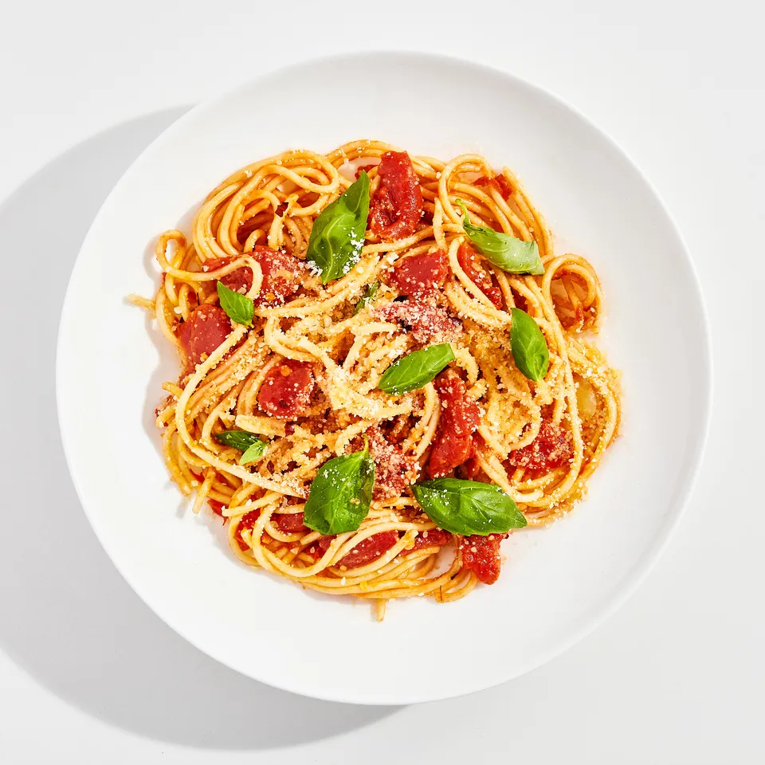

Pasta Pomodoro

Description
A tangle of perfectly-cooked spaghetti cradling a rich, buttery,
almost-as-easy-to-make-as-opening-a-can pomodoro sauce.
Ingredients
- 3 tbsp kosher salt
- 28-oz. can whole peeled tomatoes
- Garlic cloves
- Tbsp extra virgin olive oil, plus more
- 3 basil sprigs
- 1 lb. of spaghetti
- 4 1/2 oz Parmesan
Steps
-
Fill a large stock pot two-thirds full with water and heat over high to
a boil
- Smash all the ingredients together
- Cook pasta to "al dente"
- Mix all the ingredients together to your liking
- Enjoy ;)